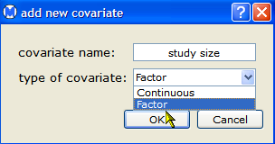
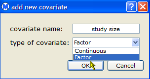

This section explains how to add covariates to a data set. In Open Meta-Analyst, covariates are used for both meta-regression and subgroup analyis. A covariate can be of the following types:
To add the covariate to a data set,

The Open Meta-Analysis window now displays a new column for the covariate.

You can enter data for the covariate by double-clicking in the column and typing the values of the covariate.
| Performing a Meta-Regression |  |